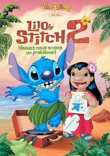

Sortie de la semaine
Là-haut DISNEY

Date de sortie : 2009
Carl Fredricksen, un vieil homme grincheux de 78 ans, vit seul dans sa maison remplie de souvenirs de sa défunte épouse, Ellie. Ensemble, ils avaient toujours rêvé de partir à l’aventure en Amérique du Sud, mais la vie ne leur en a jamais laissé l’occasion. Un jour, pour échapper à une maison de retraite et réaliser enfin leur rêve, Carl attache des milliers de ballons à sa maison pour la faire voler jusqu’aux chutes du Paradis, en pleine jungle sud-américaine. À sa grande surprise, il découvre qu’un jeune scout nommé Russell est resté coincé sur son porche lors du décollage. Ensemble, ils vivent une aventure extraordinaire, rencontrant un oiseau rare nommé Kevin et un chien parlant nommé Doug. Ils affrontent aussi Charles Muntz, un explorateur autrefois admiré par Carl, qui s’avère être l'antagoniste du film.
Le Voyage de Chihiro

Date de sortie : 2001
Chihiro, une fillette de 10 ans, emménage avec ses parents dans une nouvelle ville. En chemin, ils s’aventurent dans un tunnel mystérieux qui les mène à un monde magique peuplé d’esprits et de créatures étranges. Ses parents, après avoir mangé dans un restaurant abandonné, sont transformés en cochons. Pour sauver ses parents et retourner dans le monde réel, Chihiro doit travailler dans un immense établissement de bains pour les esprits dirigé par la sorcière Yubaba. Elle perd même son nom, rebaptisée "Sen", et apprend à se débrouiller seule dans ce monde surnaturel. Avec l’aide de Haku, un mystérieux garçon-dragon, et d’autres alliés comme le sans-visage (un esprit silencieux et étrange), Chihiro gagne en courage, en maturité et en sagesse.
Stitch 2
Date de sortie : 2003